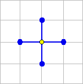
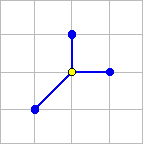
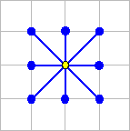

GenSetStd:
|  |
The standard generating set has 2n elements and
consists of the columns of the identity matrix and its negative. |
GenSetMin:
|  |
A generating set for Rn must
contain at least n+1 elements. The standard minimal
generating set consists of the columns of the identity matrix plus
the vector with all entries equal to -1.
|
GenSetBox2d:
|  |
The Box generating set augments the standard generating set
with the corners of a n dimensional hypercube (or "box").
In OPT++, the Box generating set has been implemented for n=2,
where the corner vectors are |
References: